Módulo 1
De la idea al juego
Cómo se pasó de «un juego sobre petardos» a Masclet a masclet. Con los prototipos que no funcionaron.
←→ para moverte · B buscar · P pantalla completa
Foto: Cperism · CC BY-SA 4.0 · Wikimedia Commons
Módulo 1
La receta que seguimos
Up! Steam pide un juego inspirado en la cultura valenciana y con valor educativo. Este módulo sigue estos cinco pasos. No hace falta tener la idea perfecta: hace falta probarla pronto.
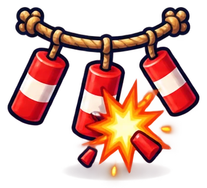
1. TradiciónAlgo de la cultura valenciana que el alumnado conozca y le guste. 2. MecánicaQué hace quien juega. Se busca en juegos que ya existen.
2. MecánicaQué hace quien juega. Se busca en juegos que ya existen.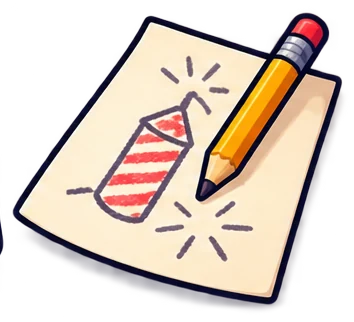
3. BocetoUna imagen hecha con IA de cómo se vería el juego. 4. PrototiposVersiones rápidas para jugarlas y tirarlas sin pena.
4. PrototiposVersiones rápidas para jugarlas y tirarlas sin pena. 5. SimplificarQuitar lo que no se pueda hacer en Scratch con 10-12 años.
5. SimplificarQuitar lo que no se pueda hacer en Scratch con 10-12 años.La idea
Por qué la mascletà
Una mascletà es un espectáculo de petardos de día. Los masclets cuelgan de cuerdas, el fuego corre por ellas y explotan con ritmo, cada vez más fuerte, hasta el terratrèmol final.
- En Fallas se dispara del 1 al 19 de marzo, a las 14:00, en la plaza del Ayuntamiento de València. También hay mascletàs en las Fogueres de Alicante y en la Magdalena de Castellón.
- Las Fallas son Patrimonio Cultural Inmaterial de la Humanidad de la UNESCO desde 2016.
- Una mascletà se valora por su ritmo, no solo por el ruido.

La clave: es ritmo
Si la mascletà es música hecha con petardos, el juego puede ser un juego de ritmo: haces explotar cada petardo al compás.
Inspiración
Juegos de ritmo que ya existen
Todos funcionan igual: algo llega al ritmo de la música y lo pulsas justo a tiempo.
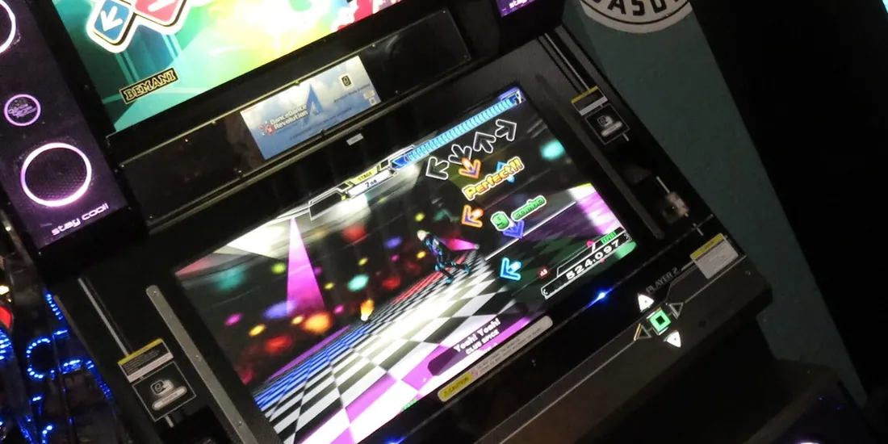
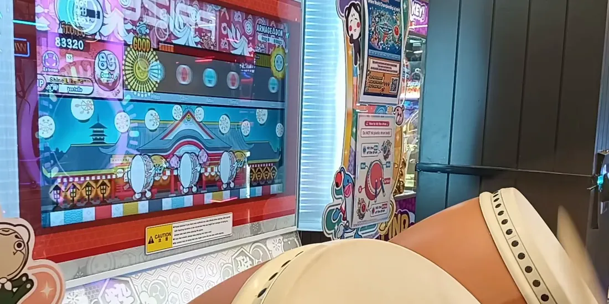
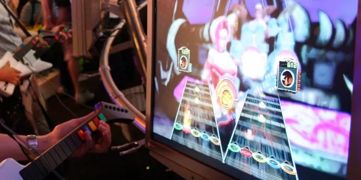
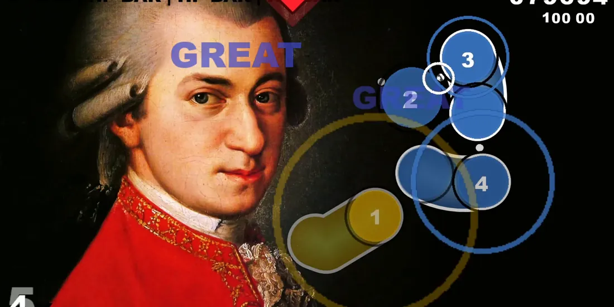
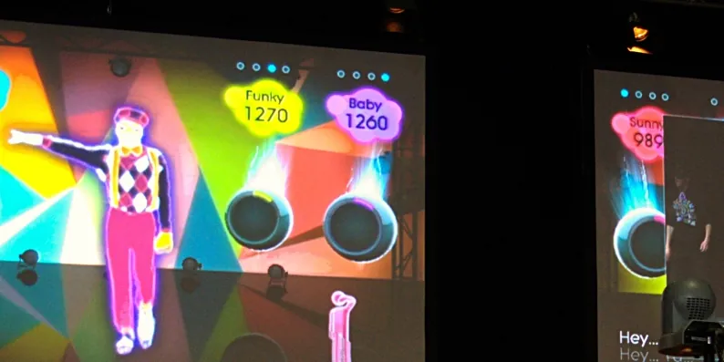
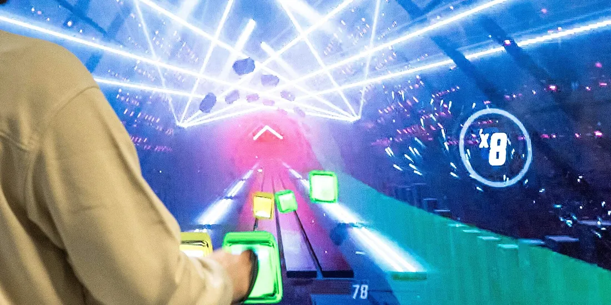
Imágenes de Wikimedia Commons (fotos y fotogramas de vídeo). DDR: DJ Damien (CC BY-SA 2.0) · Taiko: pastelle (CC BY 4.0) · Guitar Hero: włodi from London, UK (CC BY-SA 2.0) · osu!: YZiv (CC BY-SA 3.0 DE) · Just Dance: JoyTek (CC BY-SA 2.0) · Beat Saber: InclusiveGameLab (CC BY-SA 4.0). Los nombres de los juegos son marcas de sus dueños.
La idea
La idea de partida: un osu! con petardos
Jugar como en osu!, pero con petardos: lo que en osu! hace el aro, aquí lo hace la mecha.
El aviso de cuándo pulsar
Aún no
Prepárate
¡Ahora!
osu!el aro se cierra


El taller
Cómo está montado el taller
Así se trabajó. Pulsa cada «i» para ver qué es y amplía la pantalla para verla de cerca. Para tu clase no hace falta este montaje: basta con ChatGPT.
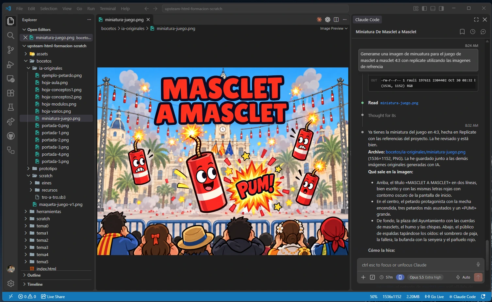
Conectados por MCP
El boceto
Un boceto antes de programar
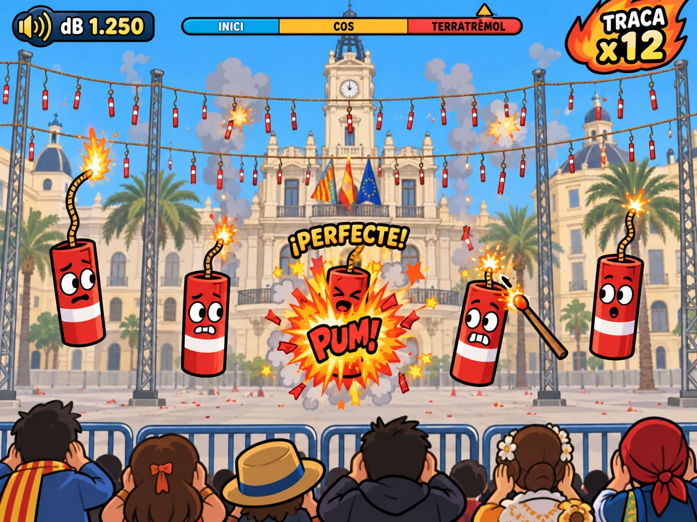
Antes de escribir un bloque, generamos una imagen de cómo podría verse el juego.
- Sirve para imaginar el juego y decidir el estilo.
- Convence al equipo: «queremos hacer esto».
- Aparecen preguntas: ¿solo hay 5 petardos? ¿Cómo sé cuándo hacer clic?
El boceto
Cómo se llegó al prompt del boceto
1. Lo que escribió el docente
«a ver dame una imagen de como seria el juego»
Antes, en el mismo chat, ya se había hablado de la idea: petardos con mecha en la plaza, decibelios, traca y las fases de la mascletà. Sin esa conversación, la frase sola no habría dado esta imagen.
2. El prompt que escribió el agente de IA
444 palabras en inglés. Completo en la diapositiva siguiente.
3. La imagen
El agente (Claude Code) está conectado a Replicate: envió el prompt a gpt-image (OpenAI), que hizo la imagen.
El boceto
El prompt que escribió la IA
Es el texto que recibió el generador de imágenes. Describe la escena por capas, la interfaz y el estilo. Está en inglés, pero en castellano también funciona.
In-game screenshot of a casual 2D rhythm game for kids, made with sprites (the kind of game a school team could build in Scratch). 4:3 game screen, no device frame, no browser frame. THEME: a Valencian 'mascleta' (rhythmic firecracker show during the Fallas festival). The player is the pyrotechnician and must click each firecracker exactly when its burning fuse reaches the end. SCENE (back to front): - Bright clear blue March sky with a few puffs of grey firecracker smoke. - Background: a simplified, stylized cartoon version of Valencia's town hall square: an elegant cream-coloured stone building with a central clock tower and a balcony decorated with flags, plus a couple of palm trees. Flat colours, low detail so it stays a background. - Middle ground: the classic mascleta setup: several long horizontal ropes stretched between tall metal poles, with dozens of small red-and-white paper firecrackers hanging from them in rows, like clothes on a washing line. A few of them are bursting in small orange-yellow flashes with puffs of smoke. - Playfield: five big chunky cartoon firecrackers spread across the screen at different positions. Each is a fat red cylinder wrapped in paper with a white band, with a cute simple face (round eyes, nervous expression) and a curly fuse on top that glows. Each fuse shows a different amount left: one fuse is long and just lit, one is half burnt, one is almost finished with bright crackling sparks and the firecracker looks scared. One firecracker in the centre is exploding right now in a big comic-book burst of orange, yellow and red with the word 'PUM!' in chunky letters, and floating above it the text '¡PERFECTE!' in golden yellow with a dark outline. - The mouse cursor is a small wooden stick with a glowing ember tip, pointing at the almost-finished firecracker. - Bottom edge: a metal crowd barrier with simple cartoon crowd silhouettes seen from behind, some covering their ears, colourful but very simple. UI / HUD (clean, chunky, readable, bold rounded cartoon font with dark outlines): - Top left: a sound-meter badge with the text 'dB 1.250'. - Top right: a fiery badge with the text 'TRACA x12'. - Top centre: a horizontal progress bar divided in three labelled segments: 'INICI', 'COS', 'TERRATRÈMOL', with a small marker on 'TERRATRÈMOL'. All text must be spelled exactly as written and nothing else written anywhere. STYLE: bright, playful, polished casual indie-game art. Bold dark outlines, flat cel shading, saturated colours: fire orange, red, golden yellow, sky blue, cream and a little Valencian blue. Clear silhouettes, strong contrast between playfield sprites and background. Fun, energetic, family-friendly. No logos, no watermark, no realistic people.
Qué hace cada parte
- Qué es: una captura de un juego 2D, 4:3 como Scratch.
- Tema: la mascletà y la regla del juego.
- Escena: de atrás adelante.
- Interfaz: textos exactos, entre comillas.
- Estilo: colores y tipo de dibujo.
Con el ratón encima del recuadro, la rueda baja por el texto.
Prototipos
Cómo se hicieron los prototipos
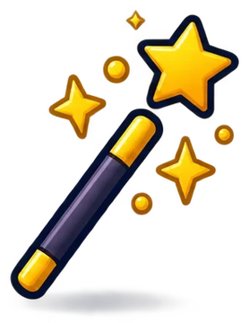
Nosotros: el agente programó cada prototipo
En el mismo chat del taller, el agente programó cada prototipo como una página web jugable, en pocos minutos, y lo probó en un navegador automático. El docente lo jugaba, decía qué no le convencía y se hacía otro.
Lo que se aprende en un prototipo vale más que el prototipo: por eso se tiran sin pena.
En clase: un prototipo en papel
Petardos dibujados en cartulinas por el suelo o en la pizarra. Una persona hace de música (palmas o la canción), otra señala el petardo que toca y otra «hace clic» con la mano.
En 15 minutos se ve si la idea se entiende y si es divertida.
Prototipos · 1 de 4
Prototipo 1: demasiadas cosas
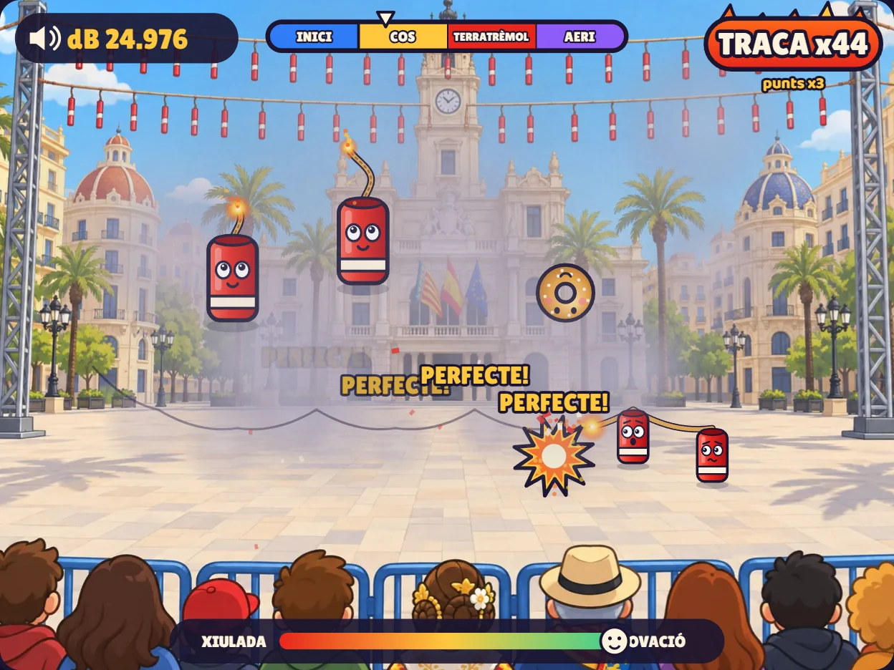
A la idea de partida le añadimos de todo: masclets, tracas que se siguen por una cuerda, carcasas que suben, buñuelos que no hay que tocar, un medidor del público, humo que se acumula y un terratrèmol pulsando la barra espaciadora.
Prototipos · 2 de 4
Prototipo 2: tres carriles
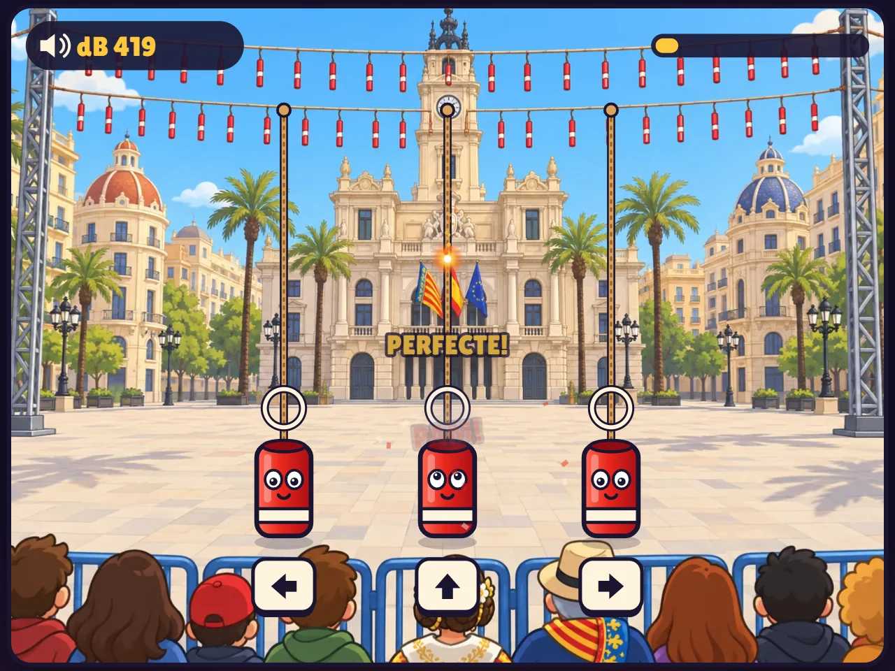
Tres petardos fijos, uno por flecha. Las chispas bajan por la mecha y pulsas la flecha cuando llegan. Con música de verdad: un pasodoble.
Prototipos · 3 de 4
Prototipo 3: eco rítmico
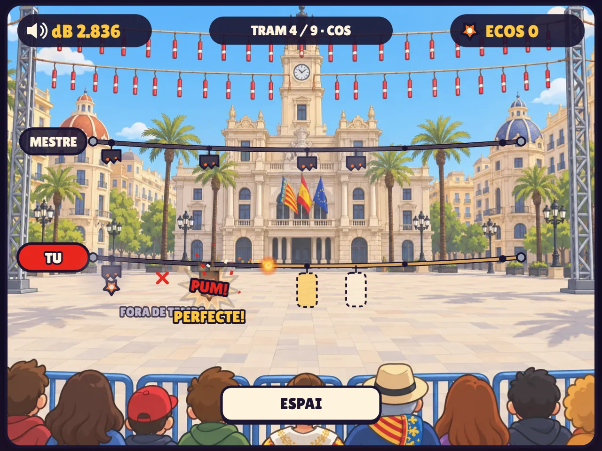
El mestre pirotécnico dispara un ritmo en su cuerda y tú lo repites en la tuya con la barra espaciadora. Muy musical: es el eco rítmico de la clase de Música.
Prototipos · 4 de 4
Prototipo 4: el que funcionó
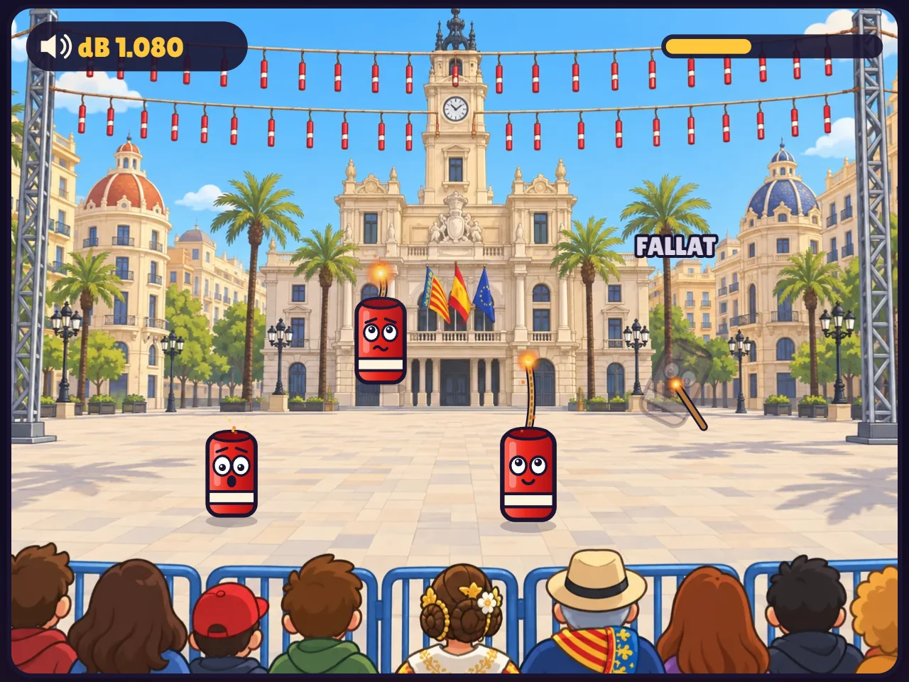
Volvimos a la idea de partida. Petardos por toda la plaza y la mecha marca el momento del clic. Cada petardo explota con una nota de la dolçaina.
Después aún cambió: al principio los petardos iban siempre de izquierda a derecha y aburría. Ahora dibujan figuras distintas en cada compás.
El resultado
De dónde sale Masclet a masclet
Una tradición y dos juegos. De cada uno cogimos una sola cosa.
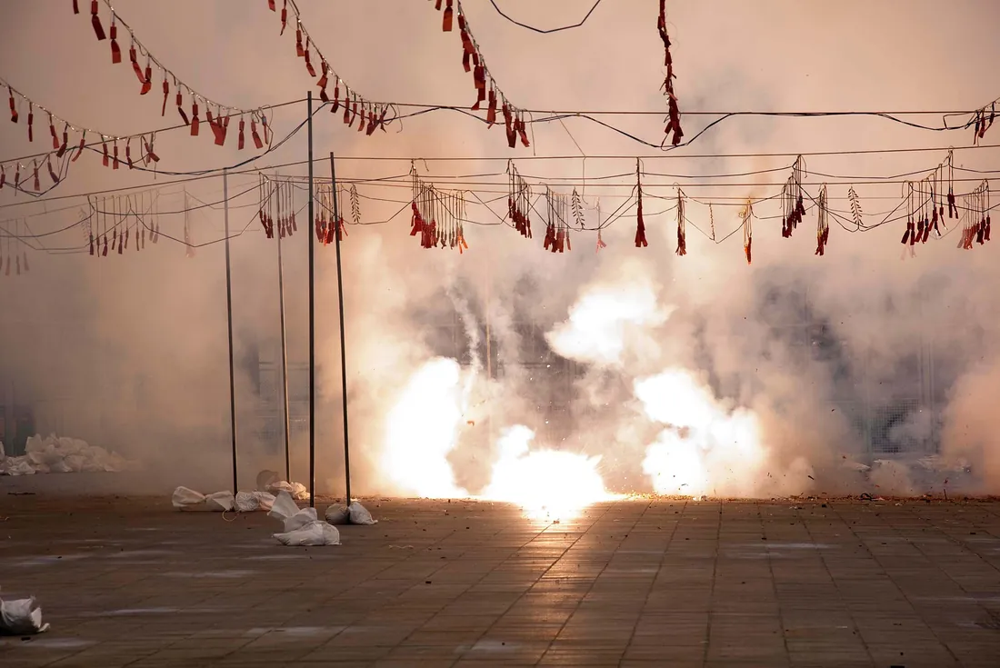
Masclets colgados de cuerdas que explotan con ritmo.
Clic donde aparece cada cosa, justo a tiempo.
Cada nota está puesta a mano sobre la canción.
Clic en cada petardo cuando se acaba la mecha, al ritmo del pasodoble.
Foto de la mascletà de Wikimedia Commons: Cperism (CC BY-SA 4.0). osu! y Guitar Hero: créditos en «Juegos de ritmo que ya existen».
Prototipos
Lo que aprendimos
Simplifica
Una sola mecánica bien hecha vale más que cinco a medias.
Que la tradición se note
Si cambias los dibujos y el juego sigue igual, la tradición es solo decoración.
Juega pronto
Lo que parece buena idea en la cabeza puede no entenderse al jugarlo.

Piensa en Scratch
Si no sabes cómo se haría en Scratch con 10 años, déjalo fuera.
Para tu clase
Tradición + mecánica = idea
La misma receta da muchos juegos distintos. Ejemplos para tu clase:
| Tradición | Mecánica | Idea de juego |
|---|---|---|
| Mascletà (Fallas, Fogueres, Magdalena) | Pulsar a tiempo | Masclet a masclet: explotar cada petardo con la música |
| Moros i Cristians | Seguir el paso | Desfile: que la filà no pierda el paso de la marcha |
| Dolçaina i tabalet | Repetir un ritmo | El tabaleter: escucha un toque y repítelo |
| Muixeranga (Algemesí) | Equilibrio | Sube a la torre humana sin que se caiga |
| Paella | Ordenar y medir el tiempo | Cocina la paella en orden y sácala en su punto |
| Ninots de falla | Construir | Monta el ninot pieza a pieza antes de la plantà |
Para tu clase
Piensa: vuestra idea
Elige una tradición de tu localidad. ¿Qué mecánica encaja con ella? ¿Qué aprendería quien juega?
Tradición: la banda de música del pueblo.
Mecánica: pulsar a tiempo.
Idea: cada instrumento es un objeto; hay que tocarlo cuando le toca en el pasodoble.
Aprende: los instrumentos de una banda y el pulso.
Ficha de idea (una cara)
- Tradición y por qué nos gusta.
- Qué hace quien juega (un verbo: pulsar, saltar, ordenar…).
- Cuándo se gana y cuándo se pierde.
- Qué aprende quien juega.
- Un dibujo de la pantalla.
Fin del módulo 1
Ya tenemos idea. Ahora, el aspecto y el sonido
En el módulo 2 verás cómo se hicieron la plaza, los petardos, los iconos y la música, con los prompts exactos.